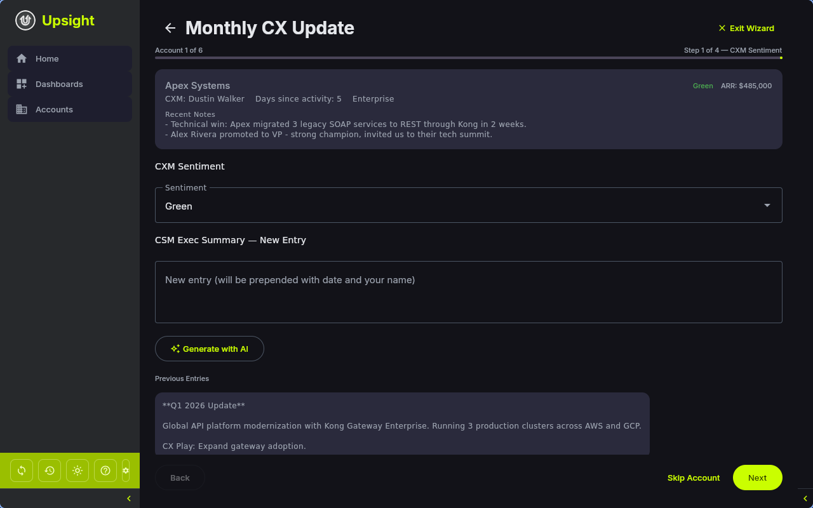

Monthly CX Update Wizard¶
The Monthly CX Update Wizard guides you through a structured review of each account's customer experience health. It collects your updates across multiple dimensions and pushes them to Salesforce in a single batch.
Purpose¶
At the start of each month, CSMs review their accounts to update CXM sentiment, health indicators, and executive summaries. The wizard:
- Walks through each account that needs an update this month
- Pre-fills current values from Salesforce so you only change what is new
- Validates field lengths against Salesforce limits before submission
- Writes all changes back to Salesforce upon submission
- Tracks which accounts have been completed for the current month

Launching the Wizard¶
There are several ways to start:
- Click Start on the monthly update banner that appears on the Dashboard when updates are due
- Select CX Update from the actions menu on any account row or card
- The wizard can be started for all accounts or a single account
When started for all accounts, they are sorted with uncompleted accounts first, then alphabetically.
Wizard Steps¶
The wizard has four steps per account. A context card at the top of each step shows the account name, current health status, ARR, CXM name, days since last activity, segment, and recent team notes.
Step 1: CXM Sentiment¶
- Sentiment -- select Green, Yellow, or Red from the dropdown
- CSM Exec Summary -- New Entry -- write a new summary entry. This is prepended (with your name and today's date) to the existing exec summary in Salesforce.
- Generate with AI -- click to have the AI generate a sentiment summary based on your account data (recent notes, interactions, escalations, tasks, REACH scores, opportunities, and feature requests)
- Previous Entries -- shows the existing exec summary for reference (read-only)
Tip
The AI sentiment generation gathers context from across the account -- recent notes, interactions, escalations, open tasks, REACH scores, opportunities, and feature requests -- to draft a comprehensive update.
Step 2: CX Play & Update¶
- CX Play -- a short text field (max 255 characters) describing the current customer experience play
- Last CX Update -- automatically set to today's date when you submit
Step 3: Health Indicators¶
Ten health indicators are displayed in a two-column layout. Each indicator has a status dropdown (Green/Yellow/Red) and a comments field:
| Indicator | Description |
|---|---|
| Consumption | Product consumption status |
| Enterprise Features | Adoption of enterprise features |
| Kong OSS Present | Whether Kong OSS is deployed alongside the commercial product |
| Critical Use Cases | Status of critical production use cases |
| Customer Business Health | Overall business health of the customer |
| Relationship Health | Quality of the customer relationship |
| Technical Engagement | Level of technical engagement and collaboration |
| Platform Play | Progress on platform adoption strategy |
| Value Realization | Whether the customer is realizing expected value |
| Active Project | Status of active implementation or project work |
Step 4: Review & Submit¶
The review step shows a diff of all changed fields with previous and new values side by side. Fields that exceed Salesforce character limits are highlighted in red and must be shortened before submission.
Actions:
- Submit to SFDC -- saves all changes to the local database and pushes them to Salesforce. Marks the account as completed for the current month.
- Skip -- move to the next account without saving changes
- Back -- return to the previous step
After Submission¶
Once submitted:
- Changes are written to the local database immediately
- Each changed field is pushed to Salesforce (see Salesforce > Write-Back Fields)
- The account is marked as completed for the current month in your config
- The wizard advances to the next account, or shows a completion summary if all accounts are done
Completion Tracking¶
The monthly update status is tracked per account using the Salesforce ID and the current YYYY-MM month string. This tracking is stored in your local config file, not in Salesforce. The Dashboard banner and calendar icons on account rows update automatically as you complete accounts.
When a new month begins, all accounts reset to "needs update" status.